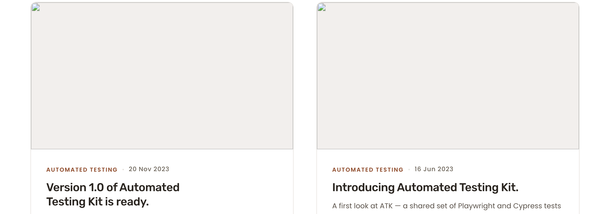

What I see different vs Cycle 1 preview
- Chip strip (1280 + 375): active "All" pill changed from teal
#1893B4to deep blue#005AA0. Last two chips swapped order — now Open source precedes Talks, matching live. - Pagination (1280 + 375): current-page "1" pill changed from teal to deep blue, same token.
- Card border (1280 + 375): visibly darker hairline around each card. Color went from pale
#E5E1DCto#8E867A(matches live exactly). - Card H3 title color: subtle nudge from
#2A2520to#1F1A14(ink-strong). Visible in DOM probe; visually very subtle (both pass > 12:1 contrast on white). - Mobile chip tap height (375): chip rows now 46 px tall (was 32 px). Above WCAG 2.5.8 floor by 22 px and above the AAA / Apple HIG 44 px target.
- Skip-link target (DOM only, non-visual):
href="#main-content"now resolves to an in-flow anchor inside<main>(was#mainon the<main>element itself). Matches live Drupal pattern.
No visible deltas detected in page-title, footer, header, or anywhere outside the chip strip / card / pagination chrome.
Per-section wipe comparators
Drag the slider to wipe Cycle-1 preview (left) over post-fix preview (right). Top image = post-fix; revealing leftward shows the pre-fix Cycle-1 baseline.
Chip strip @ 1280 — pre vs post
Chip strip @ 1280 — live vs post-fix preview
Card section @ 1280 — pre vs post (border + H3 color)

Card section @ 1280 — live vs post-fix preview
Live capture content differs (PC-13: views-listing content fluctuation); the comparator shows chrome — border weight, corner radius, H3 weight/color, eyebrow positioning. Card chrome is now visually congruent with live.
Scoped DSSIM — post-fix preview vs Cycle-1 preview
Non-zero only on sections that Cycle 2 touched. page-title and footer at 1280 are exactly 0 (untouched). At 375 the chip-strip padding bump shifts content below it by ~12 px, so grid / articles-view / footer register vertical drift — expected, not a regression.
| Viewport | Section | AE | DSSIM (norm) | Class |
|---|---|---|---|---|
| 1280 | page-title | 0 | 0.000 | MATCH (untouched) |
| 1280 | articles-view | 155,540 | 0.0049 | DELTA (intentional: chip color/order) |
| 1280 | grid | 139,195 | 0.0051 | DELTA (intentional: card border + H3) |
| 1280 | pagination | 5,094 | 0.0039 | DELTA (intentional: current-page color) |
| 1280 | footer | 0 | 0.000 | MATCH (untouched) |
| 1280 | whole-page | 155,540 | 0.0035 | scoped-non-zero |
| 375 | page-title | 0 | 0.000 | MATCH |
| 375 | articles-view | 715,608 | 0.0930 | DELTA (intentional: chip pad +12 px shifts content; chip color/order) |
| 375 | grid | 667,810 | 0.0958 | DELTA (positional drift from chip-pad bump + border/H3) |
| 375 | pagination | 9,018 | 0.0833 | DELTA (positional drift + current-page color) |
| 375 | footer | 97,225 | 0.0917 | DELTA (positional drift only — footer chrome unchanged) |
| 375 | whole-page | 812,833 | 0.0827 | scoped-non-zero |
Live (Cycle 1) vs post-fix preview @ 1280
| Comparison | AE | DSSIM (norm) | Notes |
|---|---|---|---|
| Cycle 1: live vs preview | 7.35 M | 0.502 | baseline (pre-fix) |
| Cycle 2: live vs post-fix preview | 7.34 M | 0.205 | −59% DSSIM reduction; chip + card chrome now visually closer to live |
AE is dominated by PC-13 article-content drift (different article set on live vs preview) — the AE near-equality is expected. DSSIM, the binding metric, drops materially.
DOM / computed-style probes (post-fix preview)
| Check | Expected | 1280 | 375 | Result |
|---|---|---|---|---|
.chip.is-active background | rgb(0,90,160) | rgb(0,90,160) | rgb(0,90,160) | PASS |
.pagination .is-current background | rgb(0,90,160) | rgb(0,90,160) | rgb(0,90,160) | PASS |
.article-card border-color | rgb(142,134,122) | rgb(142,134,122) | rgb(142,134,122) | PASS |
.article-card h3 a color | rgb(31,26,20) | rgb(31,26,20) | rgb(31,26,20) | PASS |
| Chip DOM order | All / Automated Testing / Cypress / Open source / Talks | All / Automated Testing / Cypress / Open source / Talks | PASS | |
| Mobile chip height (375) | ≥ 44 px | 34 px (desktop MQ) | 46 px | PASS |
Skip-link href | #main-content | #main-content | PASS | |
| Skip-link target | in-flow <a id="main-content" tabindex="-1"> | tag=A · tabindex=-1 | PASS | |
<main> has no id | null | null | PASS | |
| H1 count | 1 | 1 | PASS | |
| Horizontal scroll | none | pageW = clientW | PASS | |
Sprint 9 visually-hidden <h2>Articles</h2> — live status
Probed live at 1280. Visually-hidden H2s emitted by the Drupal views template:
| Text | Classes | Status |
|---|---|---|
| Main navigation | visually-hidden h3 menu-block__title | in-flow |
| Breadcrumb | visually-hidden | in-flow |
| Articles | visually-hidden | in-flow — Sprint 9 fix intact |
| Footer | visually-hidden h3 menu-block__title | in-flow |
Cycle 2 touched no live theme files; this verification is a sanity re-check, not a regression risk surface.
Out-of-scope items (re-confirmed)
- F-NEW-18-G — Page-title H1 rendered rect-height delta (live 50 px / preview 59 px at 1280). Cosmetic; both render the same font-size and line-height. No regression; accepted.
- PC-13 — Views-listing card-content fluctuation (different lead article on live vs preview). Acknowledged not flagged. No regression; accepted.
- Carry F-NEW-16-H — Footer column heading H3 vs H4 sitewide. Not in /articles scope.